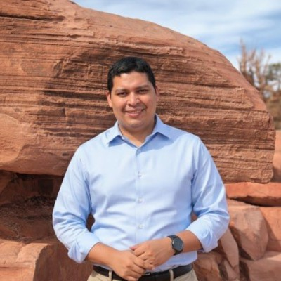

Sérgio Luiz E. F.
da Silva
Postdoctoral Researcher, Laboratory of Parallel Architectures for Signal Processing (LAPPS)
Instituto Metrópole Digital, Federal University of Rio Grande do Norte, Natal, Brazil
I study generalized entropies and use them to build statistical methods that stay reliable when data are noisy, heavy-tailed and full of outliers, from seismic imaging to earthquake statistics.

The κ-deformed Gaussian, expκ(−x²/2). The dashed curve is the ordinary Gaussian (κ = 0); the shaded band shows where the κ-curve rises above it. As κ grows, the tails thicken and decay as a power law, so a few extreme values no longer dominate a fit. This is why κ-statistics gives outlier-resistant estimators.
About
I am a physicist working on statistical physics and complex systems. My research centers on generalized statistical mechanics, in particular Kaniadakis κ-statistics and Tsallis q-statistics, and on how these frameworks can be turned into robust tools for inverse problems and parameter estimation.
I received my PhD in Physics from the Federal University of Rio Grande do Norte (UFRN) in 2021. My thesis on full-waveform inversion based on generalized statistical mechanics received the PPGF Best Thesis Award. I have since worked at the Fluminense Federal University on industry-funded seismic imaging, and from 2022 to 2025 I collaborated with the Politecnico di Torino and the Italian National Research Council (CNR) on applications of non-extensive statistical mechanics.
Today I am a postdoctoral researcher at LAPPS, IMD/UFRN, where I work on seismic imaging in attenuating media and high-performance computing. I also teach mathematics at IMD and serve on the Editorial Board of Entropy.
Research
Generalized entropies and statistical mechanics
Foundations and consequences of non-Boltzmann–Gibbs statistics: Kaniadakis, Tsallis, Rényi and Sharma–Taneja–Mittal measures. This includes Newton's cooling law in generalized statistical mechanics and κ- and q-generalized versions of the Gutenberg–Richter law that link earthquake statistics with self-similarity.
Robust inference and inverse problems
Generalized likelihoods and objective functions that resist outliers and non-Gaussian noise, from κ- and q-Gaussian estimators to correntropy and Bayesian approaches. The aim is to estimate physical parameters you cannot measure directly, from data you cannot fully trust.
Seismic imaging and high-performance computing
Full-waveform inversion, least-squares reverse time migration, optimal-transport misfits, time-lapse (4D) monitoring and viscoacoustic Q-compensation, with field applications to ocean-bottom-node data from the Brazilian pre-salt. This work runs on GPU and supercomputing infrastructure in projects with Shell Brasil and Equinor, and led to the registered software seiswave2D and seiswave3D.
Complex systems beyond geophysics
Applications of the same statistical toolkit to anthropogenic seismicity, population dynamics, urban scaling laws and wind-field reconstruction for space-borne Doppler radar. I am increasingly interested in the interplay between statistical mechanics and artificial intelligence.
Publications
Editorial work
Entropy (MDPI)
Member of the Editorial Board since 2022.
Generalized Entropies in Statistical Physics, Guest Editor with G. Kaniadakis and A. M. Scarfone.
- 2023–2024
- 2023–2024
- 2022–2023
Conference organization
- 2026SigmaPhi 2026, International Conference on Statistical Physics
- 20261st AIHPG Workshop, Artificial Intelligence & High-Performance Geophysics
- 2023SigmaPhi 2023, International Conference on Statistical Physics
Peer review
Reviewer for Chaos, Solitons & Fractals, Entropy, The European Physical Journal Plus, IEEE Sensors Journal, IEEE Transactions on Geoscience and Remote Sensing, International Journal of Geomechanics, International Journal of Theoretical Physics, Inverse Problems and Journal of Applied Geophysics.
Thesis committees
Examiner for five PhD theses and four MSc dissertations at UFRN, UFF, UERN and the University of São Paulo, on topics from generalized statistics in genomics to viscoelastic seismic modelling of the pre-salt.
Career
Positions
- 2026–Collaborating Lecturer in Mathematics
- 2024–Postdoctoral Researcher, LAPPS / nPITI, IMD–UFRN
- 2022–2025Collaborating Researcher, Consiglio Nazionale delle Ricerche (CNR), Italy
- 2022–2024Researcher, Department of Applied Science and Technology (DISAT), Politecnico di Torino
- 2021–2022Postdoctoral Researcher, Seismic Inversion and Imaging Group (GISIS), Fluminense Federal University
- 2018–2021Research Fellow, UFRN, project “New Methods for Full-Waveform Inversion”
- 2013–2017Lecturer in Mathematics, Probability and Statistics, UFRN
Education
- 2017–2021PhD in Physics, UFRN
- 2014–2016MSc in Geodynamics and Geophysics, UFRN
- 2009–2013BSc in Physics, UFRN
Research projects
- 2024–Non-Stationary Deconvolution and Imaging for High Resolution Seismic
- 2022–NEXT-SM: Meccanica Statistica non Estensiva
- 2022–2024Applicazioni Geofisiche della Meccanica Statistica Generalizzata
- 2021–2024Refraction seismics for characterization and monitoring of oil and gas reservoirs
- 2017–2021New methods of seismic exploration by full-waveform inversion
Software
- 2024seiswave2D and seiswave3D
Awards
- 2024Geosciences 2024 Outstanding Reviewer Award
- 2023Entropy 2022 Outstanding Reviewer Award
- 2022PPGF Best Thesis Award 2021
- 2017Honoured professor of the 2017.1 graduating class
Teaching and supervision
Courses taught
At UFRN, more than 25 classes since 2013: Probability and Statistics, Integrated Modelling (numerical modelling of physical systems with differential equations), Calculus I and III, Linear Algebra, Vectors and Analytic Geometry, Pre-Calculus and, since 2026, Euclidean Geometry at IMD.
Supervision
- 2025Jonatas Oliveira de Araujo
- 2024Brenno Hochwart Cardoso
- 2022João Victor Tomaz de Lima (co-supervisor)
Outreach
Short course on the R statistical system for engineering at CIENTEC/UFRN (2017), and a telescope-building workshop open to the public during the International Year of Astronomy (2009).
Contact
Instituto Metrópole Digital, Federal University of Rio Grande do Norte
Av. Senador Salgado Filho 3000, 59078-970 Natal, RN, Brazil
sergio.silva.highres@imd.ufrn.br